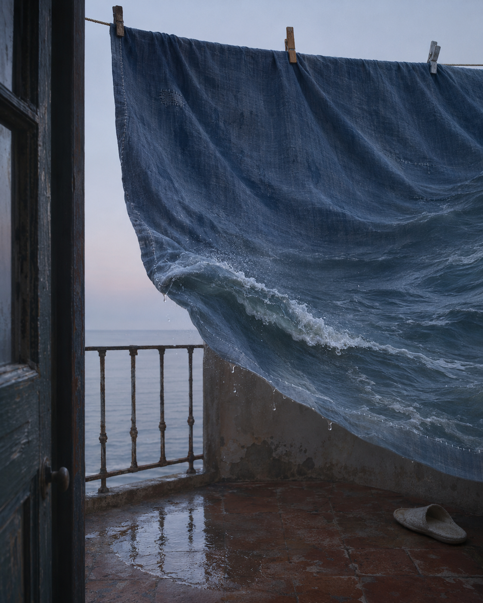

清晨的旧阳台，一条湿床单被风掀起，褶皱里有一小片潮水。

打开媒体文件 · 下载源码与提示词 · 来源与验证
ChatGPT 内置图像生成
1122 × 1402 PNG，原文件字节数与 SHA-256 已核；两次生成后选用首稿，完成目视及版本对照。虚构 AI 静态图，非真实摄影。
本次从原创提示词新生成。用户提供的八张外部作品仅用于理解想象方法，未作为图像生成输入，未复制其具体物件、人物或构图。AI 输出不构成全球独创性或版权的法律保证；未进行互联网相似作品穷尽检索。公开复用许可尚未选定。